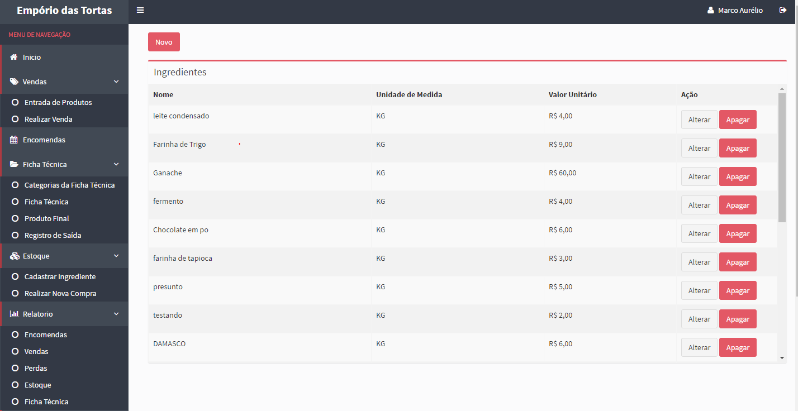
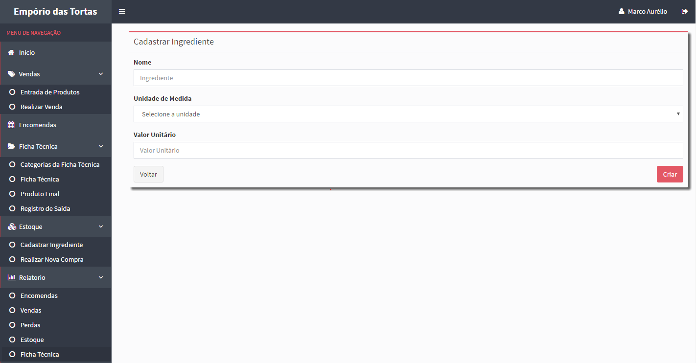
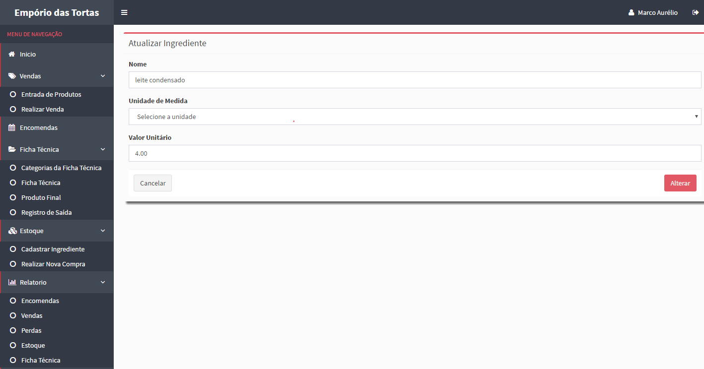
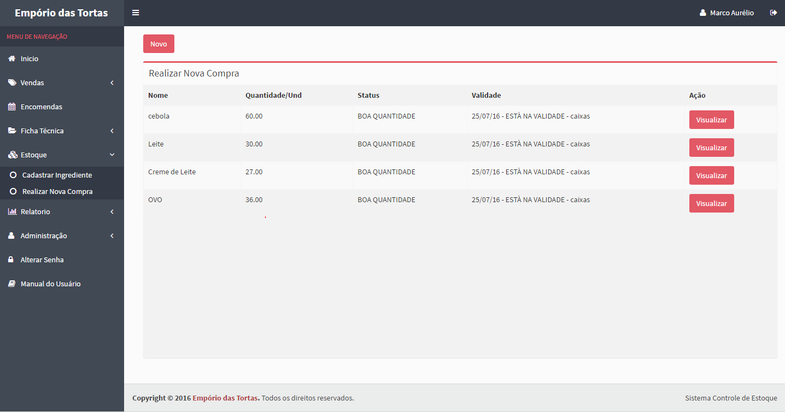
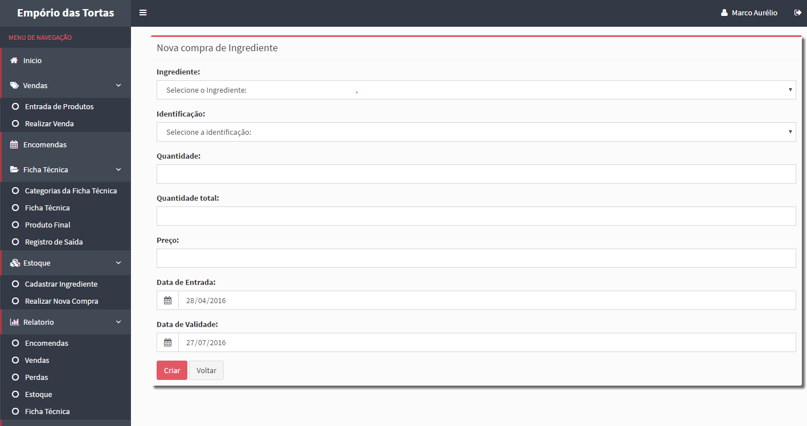
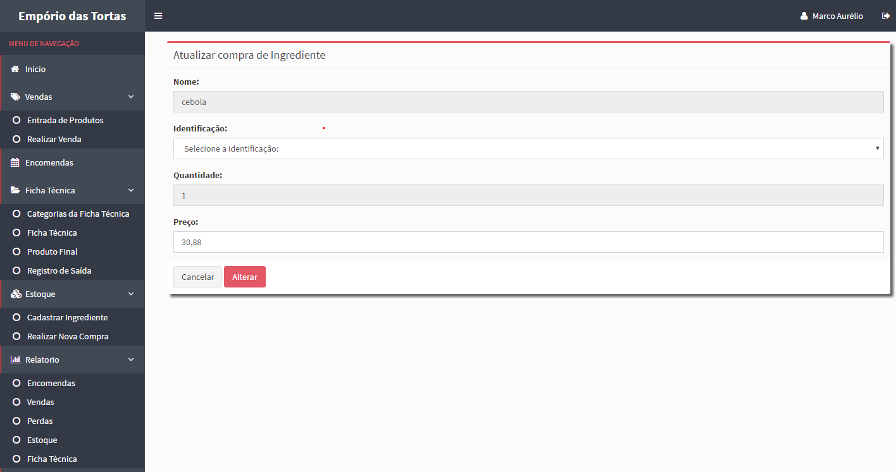

No menu de Estoque existem duas opções, a primeira é a Cadastrar Ingredientes, nessa tela será exibido os ingredientes.

Clicando no botão "Novo" poderá adiconar outros igredientes no estoque, colocando o nome do Igrediente a unidade de media e o valor unitário.

Para atualizar Igrediente no estoque, clique no botão "Alterar" e faça as alterações desejaveis.

A segunda opção do menu estoque é Realizar Nova Compra, nessa tela será exibido os ingredientes, a quantidade, o status e a validade.

Clicando no botão "Novo" poderá adiconar uma nova compra de Ingrediente no estoque, colocando o nome do Igrediente, a identificação, a quantidade, quantidade todal, preço e a data de entrada e a data de validade.

Para atualizar a compra de igrediente no estoque, clique no botão "Alterar" e faça as alterações desejaveis.

Created with the Personal Edition of HelpNDoc: Full-featured Documentation generator